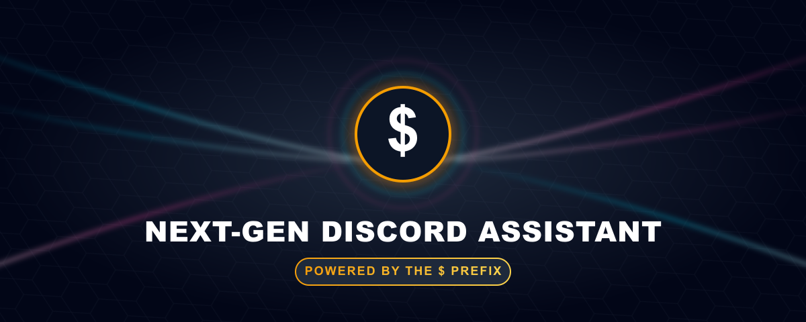
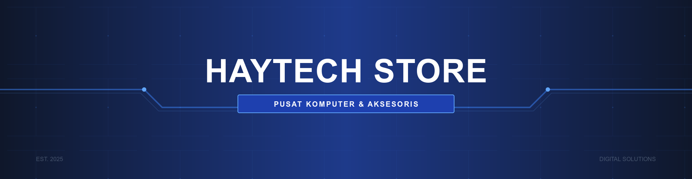

Karya Pilihan (Portofolio)

Bot discord
Membangun Bot discord dengan Python yang mengelola 50.000+ interaksi harian. Merancang PostgreSQL untuk penyimpanan data pengguna yang andal dan responsif melalui Discord API.
Lihat Detail Proyek →
NetSentinel
Menciptakan tool monitoring server berbasis web yang aman dengan mekanisme Dynamic IP Binding. Menyajikan metrik vital CPU, GPU, dan RAM melalui antarmuka responsif yang dapat diakses instan via mobile.
Lihat Detail Proyek →

Sistem Manajemen Toko Komputer
Aplikasi full-stack untuk manajemen inventaris dan POS toko komputer dengan fitur QR code scanning dan laporan real-time.
Lihat Aplikasi →